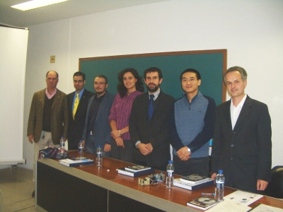
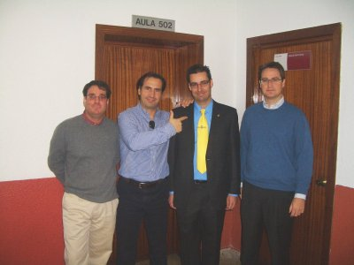
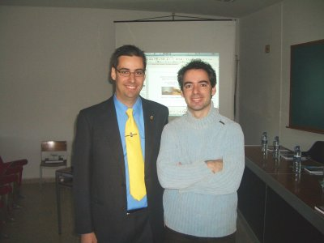
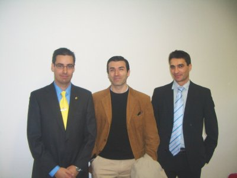
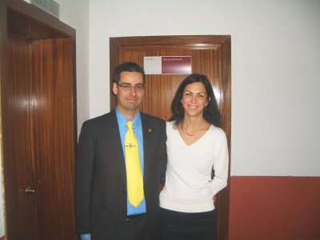

Ya soy el Dr. Obijuan 😀
Estaba muy nervioso, pero todo salió bién. En la foto superior están todos los miembros del tribunal. De derecha a izquierda: Dr. Miguel Ãngel García, Dr. Houxiang Zhang, Dr. Vicente Matellán, Dra. Cristina Urdiales y Dr. Jose María Cañas. En la parte de la izquierda está mi director: Dr. Eduardo Boemo.
Con los nervios de la lectura, no sé bien cuántas personas vinieron. Entre los asistentes estaban Angel de Castro, Jose Alberto Hernández, Sergio López-Buedo, Bas Huiszoon, Walter Fuertes, …

Los robóticos incondicionales Andrés Prieto-Moreno, Alejandro Alonso y Ricardo Gómez

Xavier de Blas vino expresamente desde Barcelona 😉 Me hizo mucha ilusión verle allí
{kind=link}

También vino desde Málaga Chris (centro de la foto). Sólo nos conocíamos virtualmente a través de Internet. Me hizo mucha ilusión que también estuviese allí. En la derecha está Juan José DomÃnguez, socio de A.R.D.E.

Y también estuvo mi mujer Mercedes, ayudándome con todos los preparativos. A nuestro hijo Juan lo dejamos con los abuelos 😉
Toda la información de la tesis: presentación, memoria, vídeos, la estoy publicando en esta página del wiki.
Con esto pongo fin a una etapa que comenzó en el 2001, cuando decidí dejar la empresa y convertirme en científico-investigador. Ahora comienzo una etapa nueva, con mucha ilusión, ganas y bastante incertidumbre sobre el futuro.
Ale, ya puedes decir “¡Yo!” cuando pregunten “¿hay algún doctor en la sala?” jeje. Enhorabuena y ahora a empezar esta nueva etapa con ilusión y seguro que muchos proyectos. Un abrazo.
FELICIDADES!!! Enhorabuena por este merecido reconocimiento a tantos y tan buenos años de trabajo. Siento no haber podido asistir, y más viendo toda la gente que fue :S. Aún quedan pendientes unas cañitas o algo, Dr González.
Muchas gracias. Ahora tengo pendientes muchas celebraciones 🙂
Enhorabuena, chavalote! Ahora, con el doctorado maligno conseguido, ya podemos dedicarnos a hacer brutos mecanicos para dominar el mundo 😉
Hombre !! hay otro Cris…. (pues nada, Saludos)
Después de escuchar de primera mano lo que ya me había leído, pues me ha gustado la presentación: Impecable !!
y la defensa de la tesis con muy buenas preguntas, me quitaron una que ya la había pensado.
Creo que las gracias las debemos dar todos a Obijuan por su aporte a la robótica que viene. 😉
(Al más puro estilo F1)
Congratulations!!! Good job! Well done!! 🙂
Desde la otra punta del planeta, te mando mis mas sinceras felicitaciones Dr. Obijuan!
Espero que aun me permitas tutearte 🙂
A ver si en navidad sacamos tiempo y nos tomamos unas cervezas con Andrés, Alejandro y Ricardo, que aunque sólo estare unos pocos días en Madrid, me gustaria veros 🙂
Muchas gracias 😀
Un Sobresaliente Cum Laude más que merecido. Me sentí muy orgulloso de ti. Un fuerte abrazo.
Alejandro